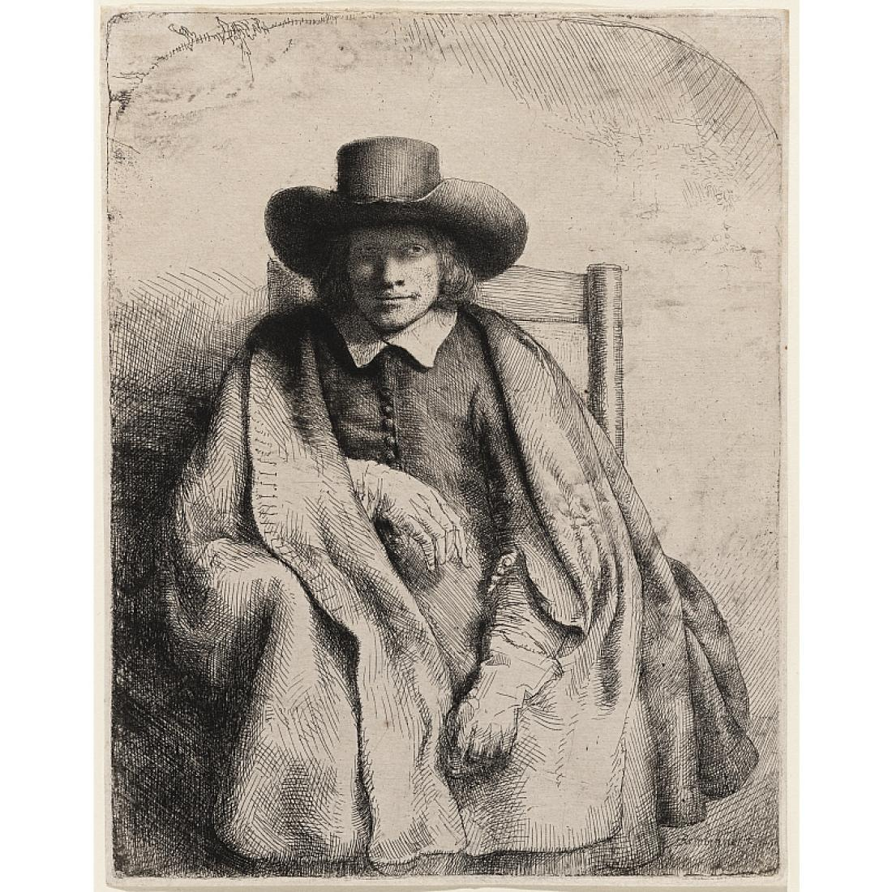

<div class="card">
  
    The Watermark Identification in Rembrandt’s Etchings (WIRE) project aims to simplify the process of identifying watermarks, which are often very difficult to tell apart. This student-designed program uses a decision tree, a branching series of questions, to guide researchers to the correct answer. The answer page provides information about the unique aspects of each watermark, which stands for a specific paper batch Rembrandt printed on. Eventually, all Rembrandt watermarks from Erik Hinterding’s 2006 catalogue will be included in this tool.
    For this demonstration version, a subset of watermark types is offered. Ultimately, researchers with watermarks of interest will be able to upload their own watermark images to the decision tree. For now, we have provided several options to choose from. Choose a comparative image and follow the series of questions and images to find your watermark’s match.">
  
